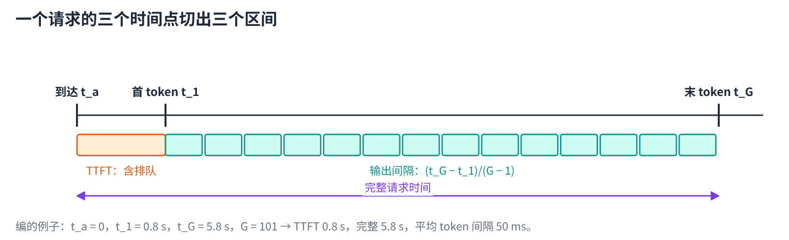
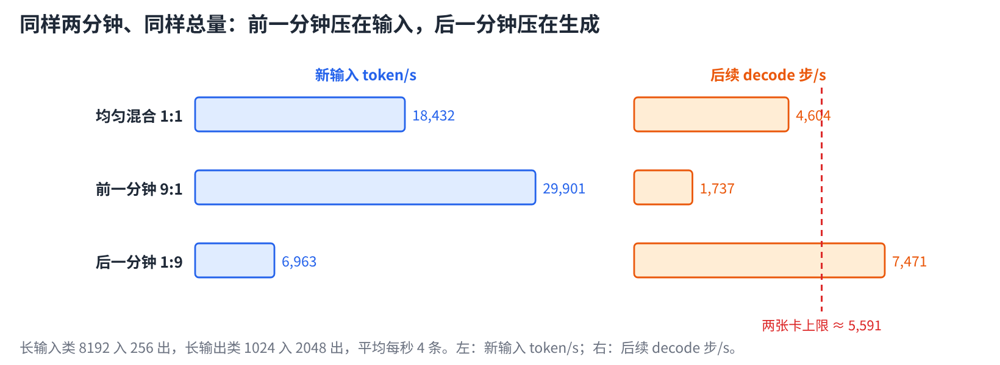
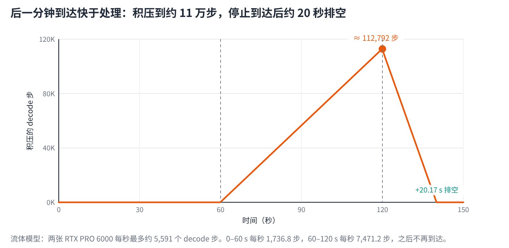
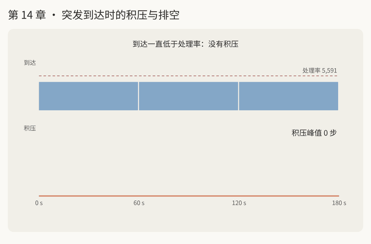

第 14 章 · 从单次请求到持续到达的负载：什么时候来，比来多少更要紧
本地运行
git clone https://github.com/wikieden/ai-infra-from-constraints
cd ai-infra-from-constraints/code/notebooks
pip install jupyterlab torch numpy
jupyter lab ch14_workload_arrival.ipynb也可以下载后直接用 VS Code 打开 .ipynb 运行。需要 GPU 的章节在 Colab 里选「代码执行程序 → 更改运行时类型 → GPU」。
本章回答：平均每秒 4 个请求、平均长度也一样，为什么有的时段会积压？TTFT、输出间隔、完整请求时间分别量的是哪一段？等待中的请求为什么也算"占用容量"？
讲解日期：2026-11-24 · 上一章：第 13 章 整个模型的资源需求与比较 · 下一章：第 15 章 多轮交互与 Agent 任务
对应原文：materials/ai-infra-book/manuscripts/03-推理与训练负载.md章首 L1–L7、§3.1 L9–L146（例题 3-1、图 3-1 到 3-8）
本章缩写：KV = Key-Value（键 / 值）· p95 = 95th percentile（第 95 / 百分位数）· TTFT = Time To First Token（到 / 第一个 / token / 的时间，首响应）· TPOT = Time Per Output Token（每个 / 输出 / token / 的时间）。全部缩写见 缩写与术语表
第 2 部分算的是一次调用要多少资源。第 3 部分加上时间：工作什么时候到，哪些步骤必须等，什么结果才算完成。
讲解
第一步：一个请求的调用链，两种形状的工作（2026-11-24）
类比：一家餐厅的两种活。 备菜（prefill）是一次切一大堆，刀工全开；出菜（decode）是一盘一盘地上，每上一盘都要回头看一眼菜单。同一个厨房，两种活对人手和工具的要求完全不同。
原文 L13：恢复 \(S\) 个上下文、处理 \(P\) 个新输入、返回 \(G\) 个 token：一次 prefill + \(n_d = G - 1\) 次 decode；第 \(j\) 次 decode 开始时上下文是 \(S + P + j\)（第 08 章）。
原文 L19–L21：同一组权重，prefill 的输入有 \(BP\) 行，单步 decode 只有 \(B\) 行。所以常说"prefill 受算力限制、decode 受带宽限制"（第 05 章的转折点 \(B_*\)）。服务系统要在这两种形状的工作之间分时间，只把 token 总数加起来会丢掉"它们属于哪个阶段、什么时候能执行"。
一句话：负载 = 一段时间里到达、等待、执行的工作；同样多的 token，分在 prefill 还是 decode、什么时候到，资源需求完全不同。
第二步：三个时间点、三个指标，以及"占着空间等"（2026-11-24）
类比：点外卖。 下单（到达）、骑手接单开始送第一份（首响应）、最后一份送到（完成）。"多久开始有东西吃"和"多久吃完"是两回事。
公式（原文 L34）：到达 \(t_a\)、首 token \(t_1\)、末 token \(t_G\)：

图 14-1 · 首响应包含开始生成前的排队；输出间隔只看生成过程；完整请求从到达算到结束。缩短排队只改善 TTFT，不会缩短已经开始后的 token 间隔。
例子（编的）：\(t_a = 0\)，\(t_1 = 0.8\) s，\(t_G = 5.8\) s，\(G = 101\)：TTFT 0.8 s，完整请求 5.8 s，平均 token 间隔 \(5.0 / 100 = 50\) ms。
p95（原文 L57，最近秩法）：\(n\) 个观测从小到大排，取第 \(\lceil 0.95n \rceil\) 个。4 条请求的 p95 是最大值；480 条请求的 p95 是第 456 个。
等待也占容量（原文 L62–L65）：状态大小 \(M(t)\) 对时间的积分
单位 byte·s：1 GiB 占 10 秒 = 10 GiB·s。任务以每秒 \(\lambda\) 个到达、每个占 \(M_0\)、平均等 \(\tau\) 秒，稳定时平均占用 \(\approx \lambda M_0 \tau\)。
成功任务成本（原文 L71）：所有尝试（包括失败的生成、工具测试、环境运行）的成本之和 ÷ 成功任务数。
| 要回答的问题 | 看什么（原文 L48–L55） |
|---|---|
| 多久开始回应 | TTFT；reasoning 模型另记首个有用输出 |
| 输出连不连续 | 逐 token / 逐块间隔的分布 |
| 多久做完 | 完整请求时间、完整任务时间 |
| 每秒完成多少合格任务 | 质量和时限要求下的有效吞吐 |
| 一个成功结果花多少 | 全部尝试成本 ÷ 成功任务数 |
| 等待时还占着什么 | 状态大小、存放位置和驻留时间 |
一句话：TTFT、输出间隔、完整请求时间各量一段；等待中的状态按"空间 × 时间"占容量；成本要按成功任务摊。
第三步：平均够用，为什么还会积压（2026-11-24）
类比：一个收费站。 一天的车流平均下来收费员处理得过来，但早高峰那一小时车比收费员快，车就排起长队；晚上闲下来的时间没法挪到早上用。
例题 3-1（原文 L81–L97）：两类请求，两分钟各来 240 条（平均每秒 4 条）：长输入类输入 8192、输出 256；长输出类输入 1024、输出 2048。
| 时间窗 | 两类比例 | 新输入 token/s | 后续 decode 步/s |
|---|---|---|---|
| 均匀混合 | 1 : 1 | 18,432 | 4,604 |
| 前一分钟 | 9 : 1 | 29,900.8 | 1,736.8 |
| 后一分钟 | 1 : 9 | 6,963.2 | 7,471.2 |

图 14-2 · 三个时间窗的阶段需求。平均值完全一样，但前一分钟压力在 prefill，后一分钟压力在 decode。
decode 能跑多快（原文 L113）：两张 RTX PRO 6000（各 1.792 TB/s），每张一份 Qwen3-8B BF16，最多 64 条序列同时 decode。一步至少读 15.14 GB 权重 + 64 条序列的旧 KV（平均上下文约 2742 个 token × 144 KiB）≈ 41.02 GB，要 22.89 ms，单卡每秒最多约 2,796 步，两张约 5,591 步。这是带宽允许的上限，实测只会更低。
积压（原文 L108）：流体队列模型，按时间窗递推
- \(Q_k\)：窗口开始时的积压；\(A_k\)：窗口内新到的工作；\(\mu_k \Delta t\)：窗口内能做完的量。
后一分钟每秒多来 \(7471.2 - 5591.33 \approx 1879.87\) 步，60 秒积压约 112,792 步；停止到达后还要 \(112792 / 5591.33 \approx 20.17\) 秒才能排空。前一分钟没用掉的能力存不到后一分钟。

图 14-3 · 流体模型：前两个窗口处理能力足够，队列为空；第三个窗口到达快于处理，积压线性上升，到达停止后线性排空。
一般规律（原文 L141）：到达速率 \(\lambda_w\) 连续 \(\tau\) 秒高于处理率 \(\mu\)，积压 \((\lambda_w - \mu)\tau\)，排空要 \((\lambda_w - \mu)\tau / \mu\)。突发时长加倍，两者都加倍。
一句话：处理能力按平均值配够了，突发时段仍会积压；积压 = 超出速率 × 持续时间。
第四步：实测：KV 池填满时，等的是空间，不是算力（2026-11-24）
类比：餐厅座位坐满了。 厨房可能还有空灶，但没座位，新客人也只能在门口等；有时还得请吃到一半的客人先让座（抢占），过会儿再回来接着吃。
原文 L121–L129：一张 RTX PRO 6000 跑 Qwen3-8B（vLLM 0.23），KV 池 24 GiB，最多 64 条序列，关闭前缀缓存。两种到达序列各 480 条请求、120 秒内到达。
| 观察 | 均匀混合 | 前 9:1、后 1:9 |
|---|---|---|
| 完整请求 p95 | 约 299.4 s | 约 299.4 s |
| TTFT p95 | 242.9 s | 258.9 s |
| 初次调度等待 p95 | 242.4 s | 258.4 s |
| 最后一条完成 | 419.8 s | 418.7 s |
| 抢占事件 | 62 | 24 |
- 两次都大量积压：480 条请求共 552,480 个 decode 步，一张卡至少要 197.6 秒，而请求 120 秒就全到了。
- 完整请求 p95 一样，TTFT 却差约 16 秒：到达顺序改变了什么时候释放状态、什么时候能接纳新请求。
- KV 池都到过 100%，空间不够时调度器会抢占：暂停某条已开始的请求、释放它的 KV，之后再恢复或重算。
场景代码：vLLM 的 OpenAI 兼容服务支持流式输出，客户端自己就能量出三个时间点：
import time
from openai import OpenAI
client = OpenAI(base_url="http://localhost:8000/v1", api_key="EMPTY")
t_a = time.perf_counter(); t_1 = None; n = 0
for chunk in client.chat.completions.create(model="Qwen/Qwen3-8B", stream=True,
messages=[{"role": "user", "content": "帮我找代码里的 bug：..."}]):
if chunk.choices and chunk.choices[0].delta.content:
t_1 = t_1 or time.perf_counter(); n += 1 # 首个可见 token 的时间
t_G = time.perf_counter()
print(f"TTFT {t_1 - t_a:.2f}s，完整 {t_G - t_a:.2f}s，块间隔 {(t_G - t_1) / max(n - 1, 1) * 1e3:.0f} ms")
一句话：排队既可能因为算得不够快，也可能因为状态池满了、已有请求没释放空间；同样的总量，到达顺序会改变用户开始收到响应的时间。
动画演示：突发到达时的积压与排空

可交互版：animations/14-workload-arrival.html（三个滑块：三个时间窗各自每秒到达多少 decode 步；处理率固定两张 RTX PRO 6000 的约 5,591 步/秒）。
怎么看：
- 上半部分是到达速率（三个窗口各 60 秒）和处理率（虚线）；
- 下半部分是积压 \(Q(t)\)：到达高于虚线时上升，低于时下降，不会低于 0（第三步）；
- 播放时依次演示均匀混合、例题 3-1 的时段变化：后一分钟积压到约 11 万步，停止到达后约 20 秒排空；
- 拖动滑块构造自己的突发，看积压峰值和排空时间。
练习与作答记录
题 1（第二步）：一个请求 \(t_a = 2.0\) s，\(t_1 = 3.5\) s，\(t_G = 13.5\) s，输出 201 个 token。TTFT、完整请求时间、平均 token 间隔各是多少？另有 20 个请求的完整时间，按最近秩法 p95 取第几个？
作答记录：（待作答）
题 2（第二步）：Agent 任务每秒 3 个进入工具等待，每个占 2 GiB 状态，平均等 5 秒。稳定时平均有几个任务在等？平均占多少状态？每个任务在等待期间累计占多少 GiB·s？
作答记录：（待作答）
题 3（第三步）：decode 处理率 5,591 步/秒，一次突发每秒来 8,000 步，持续 45 秒，之前队列为空。突发结束时积压多少？停止到达后多久排空？
作答记录：（待作答）
原书练习 3-1（L23–L25：一条请求输出 1024 vs 八条各 128）、练习 3-2（L143–L145：30 秒突发、两张或三张卡，工具等待的状态占用）。想多练可以做。
口诀
备菜一大堆，出菜一盘盘；
下单、接单、送完，三个钟各量一段；
闲时的力气存不到忙时，超出乘时长就是积压；
座位坐满了，灶台空着也得等。
本章复习卡片
I49（TTFT、完整请求时间、token 间隔，p95）、I50（状态占用的空间 × 时间，\(\lambda M_0 \tau\)）、I51（积压递推与突发公式）、I52（KV 池满与抢占）。练习做完后，按答错、卡住的地方再补。
附录 · 延伸阅读
留给以后深入学习用，不影响本章主线。★ 是建议先读的。
推荐阅读
| 读什么 | 读哪里 | 读它为了什么 |
|---|---|---|
| ★ AII 第 3 章 | 章首 L1–L7、§3.1 L9–L146 | 本章原文，例题 3-1、图 3-1 到 3-8 |
| ServeGen 论文 | 全文（原文脚注 [^servegen]） |
生产服务的客户组成与请求分布怎么重建 |
AII 实验 experiments/ch03/ 的到达回放 |
README | 两种到达序列的实测配置与原始记录（原文 [^arrival]） |
| Kwon 等, vLLM / PagedAttention（SOSP 2023） | 第 4 节 | KV 池、抢占与重算是怎么实现的（原书第 8 章展开） |
| AISPE 第 15、16 章 | 中英对照 | 推理服务的指标与分析工具 |
数学原理
- 百分位数（最近秩法）：排序后取第 \(\lceil pn \rceil\) 个观测。
- Little 定律：稳定系统里平均在系统中的数量 = 到达率 × 平均停留时间；乘上每个占的空间就是平均占用 \(\lambda M_0 \tau\)。
- 流体近似：把离散的步当作连续流量，积压的变化率 = 到达率 − 处理率，并截断在 0。
公式清单
| 公式 | 意思 |
|---|---|
| \(T_{\mathrm{TTFT}} = t_1 - t_a\)，\(T_{\mathrm{request}} = t_G - t_a\)，\(\overline{T}_{\mathrm{token}} = (t_G - t_1)/(G - 1)\) | 三个时间指标 |
| p95 = 排序后第 \(\lceil 0.95n \rceil\) 个 | 最近秩法 |
| \(A_M = \int M(t)\,\mathrm{d}t\)；平均占用 \(\approx \lambda M_0 \tau\) | 状态占用 |
| \(Q_{k+1} = \max(0, Q_k + A_k - \mu_k \Delta t)\) | 积压递推 |
| 积压 \((\lambda_w - \mu)\tau\)，排空 \((\lambda_w - \mu)\tau/\mu\) | 突发 |
代码对照：把本章的数字用代码算一遍
纯 Python，不需要 GPU。代码在仓库本地
ai-infra/solutions/chapter-code/ch14_workload_arrival.py，配套测试tests/test_ch14.py：
bash cd ai-infra/solutions/chapter-code uv run python ch14_workload_arrival.py # 一步一步打印 uv run pytest tests/test_ch14.py
讲义 ↔ 代码：
| 讲义 | 公式 | 写法 | 跑出来 |
|---|---|---|---|
| 第二步 三个指标 | 时间差 | request_metrics(0, 0.8, 5.8, 101) |
0.8 s、5.8 s、50 ms |
| 第二步 p95 | 最近秩 | p95_rank(4)、p95_rank(480) |
第 4 个、第 456 个 |
| 第三步 阶段需求 | 两类请求按比例加 | window_demand(4 * 0.5) 等 |
18,432 / 4,604；29,900.8 / 1,736.8；6,963.2 / 7,471.2 |
| 第三步 decode 处理率 | 读取量 ÷ 带宽 | decode_rate() |
一步 22.89 ms，单卡约 2,796 步/秒 |
| 第三步 积压 | 逐秒递推 | simulate_backlog([...], mu) |
峰值约 112,792 步，排空约 20.17 s |
关键几行：
def simulate_backlog(arrivals, mu, dt=0.01):
q, peak, t, t_empty = 0.0, 0.0, 0.0, None
for a in arrivals + [0.0] * 60: # 后面补 60 秒不再到达
for _ in range(int(1 / dt)):
q = max(0.0, q + (a - mu) * dt) # 到达 − 处理，不能为负
t += dt; peak = max(peak, q)
if q == 0 and peak > 0 and t_empty is None: t_empty = t
return peak, t_empty
代码里才看得到的 3 件事：
- 处理率是用均匀混合时的平均上下文 2742（精确值 2741.8）算的，代码得 2,795.70 步/秒、积压 112,788 步，原书是 2,795.66 和 112,792，差在舍入，测试放宽到几十步以内；原书说三个时间窗都沿用这个数，严格说后一分钟长输出类多、平均上下文更短，真实处理率会略高。
simulate_backlog用 0.01 秒的小步长逐秒推进，和"按 60 秒窗口一步递推"结果一样，因为每个窗口内到达和处理都是匀速。p95_rank用math.ceil；不同工具的百分位定义不一样（插值法会给出非整数位置），比较时先确认口径。
自己改一改（不影响练习答案）：
- 把后一分钟的比例从 1:9 改成 3:7，看还会不会积压。
- 把 decode 卡数从 2 改成 3，重跑
simulate_backlog。 - 用
state_occupancy(λ, M0, τ)算一算：工具等待从 10 秒延长到 60 秒，平均占用涨几倍。